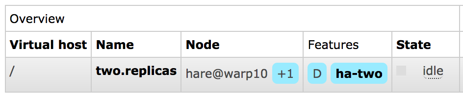
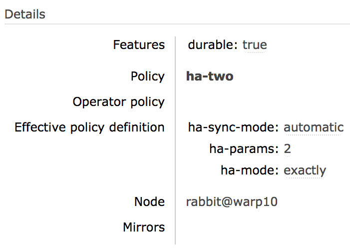

Classic Queue Mirroring
Wait, There's a Better Way: Next Generation Highly Available Queues and Streams
This guide covers a deprecated and scheduled for removal feature: mirroring (queue contents replication) of classic queues. Quorum queues is an alternative, more modern queue type that offers high availability via replication and focuses on data safety. As of RabbitMQ 3.10, quorum queues support message TTL and provide higher throughput and more stable latency compared to mirrored classic queues.
Streams is a messaging data structure available as of RabbitMQ 3.9, and is also replicated.
Quorum queues should be the default choice for a replicated queue type. Classic queue mirroring will be removed in a future version of RabbitMQ: classic queues will remain a supported non-replicated queue type.
Overview
Topics covered in this guide include
- Next generation replicated queue type and why it should be preferred over classic queue mirroring
- What is classic queue mirroring and how it works
- How to enable it
- What mirroring settings are available
- What replication factor is recommended
- Data locality
- Leader election (mirror promotion) and unsynchronised mirrors
- Mirrored vs. non-mirrored queue behavior in case of node failure
- Batch synchronisation of newly added and recovering mirrors
and more.
This guide assumes general familiarity with RabbitMQ clustering.
What is Queue Mirroring
Important: mirroring of classic queues will be removed in a future version of RabbitMQ. Consider using quorum queues or a non-replicated classic queue instead.
By default, contents of a queue within a RabbitMQ cluster are located on a single node (the node on which the queue was declared). This is in contrast to exchanges and bindings, which can always be considered to be on all nodes. Queues can optionally run mirrors (additional replicas) on other cluster nodes.
Each mirrored queue consists of one leader replica and one or more mirrors (replicas). The leader is hosted on one node commonly referred as the leader node for that queue. Each queue has its own leader node. All operations for a given queue are first applied on the queue's leader node and then propagated to mirrors. This involves enqueueing publishes, delivering messages to consumers, tracking acknowledgements from consumers and so on.
Queue mirroring implies a cluster of nodes. It is therefore not recommended for use across a WAN (though of course, clients can still connect from as near and as far as needed).
Messages published to the queue are replicated to all mirrors. Consumers are connected to the leader regardless of which node they connect to, with mirrors dropping messages that have been acknowledged at the leader. Queue mirroring therefore enhances availability, but does not distribute load across nodes (all participating nodes each do all the work).
If the node that hosts queue leader fails, the oldest mirror will be promoted to the new leader as long as it's synchronised. Unsynchronised mirrors can be promoted, too, depending on queue mirroring parameters.
There are multiple terms commonly used to identify primary and secondary replicas in a distributed system. This guide typically uses "leader" to refer to the primary replica of a queue and "mirror" for secondary replicas.
Queue object fields in the HTTP API and CLI tools originally used the unfortunate term "slave" to refer to secondaries. That term still appears in column names in CLI tools for backwards compatibility but will be replaced or removed in a future version.
How Mirroring is Configured
Mirroring parameters are configured using policies. A policy matches one or more queues by name (using a regular expression pattern) and contains a definition (a map of optional arguments) that are added to the total set of properties of the matching queues.
Please see Runtime Parameters and Policies for more information on policies.
Queue Arguments that Control Mirroring
As we've covered above, queues have mirroring enabled via policy. Policies can change at any time; it is valid to create a non-mirrored queue, and then make it mirrored at some later point (and vice versa). There is a difference between a non-mirrored queue and a mirrored queue which does not have any mirrors - the former lacks the extra mirroring infrastructure and will likely provide higher throughput.
Adding mirrors to a queue increases cluster load but helps lower the probability of losing all up-to-date replicas.
To make the classic queues mirrored, create a policy which matches them and sets policy keys ha-mode and (optionally) ha-params. The following table explains the options for these keys:
| ha-mode | ha-params | Result |
|---|---|---|
| exactly | count | Number of queue replicas (leader plus mirrors) in the cluster. A count value of 1 means a single replica: just the queue leader. If the node running the queue leader becomes unavailable, the behaviour depends on queue durability. A count value of 2 means 2 replicas: 1 queue leader and 1 queue mirror. In other words: `NumberOfQueueMirrors = NumberOfNodes - 1`. If the node running the queue leader becomes unavailable, the queue mirror will be automatically promoted to leader according to the mirror promotion strategy configured. If there are fewer than count nodes in the cluster, the queue is mirrored to all nodes. If there are more than count nodes in the cluster, and a node containing a mirror goes down, then a new mirror will be created on another node. Use of `exactly` mode with `"ha-promote-on-shutdown": "always"` can be dangerous since queues can migrate across a cluster and become unsynced as it is brought down. |
| all | (none) | Queue is mirrored across all nodes in the cluster. When a new node is added to the cluster, the queue will be mirrored to that node. This setting is very conservative. Mirroring to a quorum (N/2 + 1) of cluster nodes is recommended instead. Mirroring to all nodes will put additional strain on all cluster nodes, including network I/O, disk I/O and disk space usage. |
| nodes | node names | Queue is mirrored to the nodes listed in node names. Node names are the Erlang node names as they appear in rabbitmqctl cluster_status; they usually have the form "rabbit@hostname". If any of those node names are not a part of the cluster, this does not constitute an error. If none of the nodes in the list are online at the time when the queue is declared then the queue will be created on the node that the declaring client is connected to. |
Whenever the HA policy for a queue changes it will endeavour to keep its existing mirrors as far as this fits with the new policy.
Replication Factor: How Many Mirrors are Optimal?
Mirroring to all nodes is the most conservative option. It will put additional strain on all cluster nodes, including network I/O, disk I/O and disk space usage. Having a replica on every node is unnecessary in most cases.
For clusters of 3 and more nodes it is recommended to replicate to a quorum (the majority) of nodes, e.g. 2 nodes in a 3 node cluster or 3 nodes in a 5 node cluster.
Since some data can be inherently transient or very time sensitive, it can be perfectly reasonable to use a lower number of mirrors for some queues (or even not use any mirroring).
How to Check if a Queue is Mirrored?
Mirrored queues will have a policy name and the number of additional replicas (mirrors) next to it on the queue page in the management UI.
Below is an example of a queue named two.replicas which has a leader and a mirror:

leader node for the queue and its online mirror(s), if any, will be listed on the queue page:

If the queue page does not list any mirrors, the queue is not mirrored (or has only one mirror which is not online):

When a new queue mirror is added, the event is logged:
2018-03-01 07:26:33.121 [info] <0.1360.0> Mirrored queue 'two.replicas' in vhost '/': Adding mirror on node hare@warp10: <37324.1148.0>
It is possible to list queue leader and mirrors using rabbitmqctl list_queues. In this example we also display queue policy since it's highly relevant:
# mirror_pids is a new field alias introduced in RabbitMQ 3.11.4 rabbitmqctl list_queues name policy pid mirror_pids # => Timeout: 60.0 seconds ... # => Listing queues for vhost / ... # => two.replicas ha-two <hare@warp10.1.2223.0> [<rabbit@warp10.3.1360.0>]
If a queue that's expected to be mirroring is not, this usually means that its name doesn't match that specified in the policy that controls mirroring or that another policy takes priority (and does not enable mirroring). See Runtime Parameters and Policies to learn more.
Queue Leader Replicas, Leader Migration, Data Locality
Queue Leader Location
Every queue in RabbitMQ has a primary replica. That replica is called queue leader (originally "queue master"). All queue operations go through the leader replica first and then are replicated to followers (mirrors). This is necessary to guarantee FIFO ordering of messages.
To avoid some nodes in a cluster hosting the majority of queue leader replicas and thus handling most of the load, queue leaders should be reasonably evenly distributed across cluster nodes.
Queue leaders can be distributed between nodes using several strategies. Which strategy is used is controlled in three ways, namely, using the x-queue-master-locator optional queue argument, setting the queue-master-locator policy key or by defining the queue_master_locator key in the configuration file. Here are the possible strategies and how to set them:
- Pick the node hosting the minimum number of leaders: min-masters
- Pick the node the client that declares the queue is connected to: client-local
- Pick a random node: random
"nodes" Policy and Migrating Leaders
Note that setting or modifying a "nodes" policy can cause the existing leader to go away if it is not listed in the new policy. In order to prevent message loss, RabbitMQ will keep the existing leader around until at least one other mirror has synchronised (even if this is a long time). However, once synchronisation has occurred things will proceed just as if the node had failed: consumers will be disconnected from the leader and will need to reconnect.
For example, if a queue is on [A B] (with A the leader), and you give it a nodes policy telling it to be on [C D], it will initially end up on [A C D]. As soon as the queue synchronises on its new mirrors [C D], the leader on A will shut down.
Mirroring of Exclusive Queues
Exclusive queues will be deleted when the connection that declared them is closed. For this reason, it is not useful for an exclusive queue to be mirrored (or a non-durable queue, for that matter) since when the node hosting it goes down, the connection will close and the queue will need to be deleted anyway.
For this reason, exclusive queues are never mirrored (even if they match a policy stating that they should be). They are also never durable (even if declared as such).
Non-mirrored Queue Behavior in a Cluster
This guide focuses on mirrored queues, however, it is important to briefly explain how non-mirrored queues behave in a cluster in contrast with mirrored ones.
If leader node of a queue (the node running queue leader) is available, all queue operations (e.g. declaration, binding and consumer management, message routing to the queue) can be performed on any node. Cluster nodes will route operations to the leader node transparently to the clients.
If leader node of a queue becomes unavailable, the behaviour of a non-mirrored queue depends on its durability. A durable queue will become unavailable until the node comes back. All operations on a durable queue with unavailable leader node will fail with a message in server logs that looks like this:
operation queue.declare caused a channel exception not_found: home node 'rabbit@hostname' of durable queue 'queue-name' in vhost '/' is down or inaccessible
A non-durable one will be deleted.
In case it is desired that the queue remains available at all times, mirrors can be configured to be promoted to leader even when not in sync.
Examples
Below is a policy where queues whose names begin with "two." are mirrored to any two nodes in the cluster, with automatic synchronisation:
| rabbitmqctl |
rabbitmqctl set_policy ha-two "^two\." \
'{"ha-mode":"exactly","ha-params":2,"ha-sync-mode":"automatic"}'
|
|---|---|
| rabbitmqctl (Windows) |
rabbitmqctl.bat set_policy ha-two "^two\." ^
"{""ha-mode"":""exactly"",""ha-params"":2,""ha-sync-mode"":""automatic""}"
|
| HTTP API |
PUT /api/policies/%2f/ha-two
{
"pattern":"^two\.",
"definition": {
"ha-mode":"exactly",
"ha-params":2,
"ha-sync-mode":"automatic"
}
}
|
| Web UI |
|
The following example declares a policy which matches the queues whose names begin with "ha." and configures mirroring to all nodes in the cluster.
Note that mirroring to all nodes is rarely necessary and will result in unnecessary resource waste.
See To How Many Nodes to Mirror? above:
| rabbitmqctl |
# Note that mirroring to all nodes is rarely necessary.
# Consider mirroring to the majority (N/2+1) nodes with "ha-mode":"exactly" instead.
rabbitmqctl set_policy ha-all "^ha\." '{"ha-mode":"all"}'
|
|---|---|
| rabbitmqctl (Windows) |
# Note that mirroring to all nodes is rarely necessary.
# Consider mirroring to the majority (N/2+1) nodes with "ha-mode":"exactly" instead.
rabbitmqctl.bat set_policy ha-all "^ha\." "{""ha-mode"":""all""}"
|
| HTTP API |
PUT /api/policies/%2f/ha-all {"pattern":"^ha\.", "definition":{"ha-mode":"all"}}
|
| Web UI |
|
A policy where queues whose names begin with "nodes." are mirrored to specific nodes in the cluster:
| rabbitmqctl |
rabbitmqctl set_policy ha-nodes "^nodes\." \
'{"ha-mode":"nodes","ha-params":["rabbit@nodeA", "rabbit@nodeB"]}'
|
|---|---|
| rabbitmqctl (Windows) |
rabbitmqctl set_policy ha-nodes "^nodes\." ^
"{""ha-mode"":""nodes"",""ha-params"":[""rabbit@nodeA"", ""rabbit@nodeB""]}"
|
| HTTP API |
PUT /api/policies/%2f/ha-nodes
{"pattern":"^nodes\.", "definition":{"ha-mode":"nodes", "ha-params":["rabbit@nodeA", "rabbit@nodeB"]}
|
| Web UI |
|
Mirrored Queue Implementation and Semantics
As discussed, for each mirrored queue there is one leader replica and several mirrors, each on a different node. The mirrors apply the operations that occur to the leader in exactly the same order as the leader and thus maintain the same state. All actions other than publishes go only to the leader, and the leader then broadcasts the effect of the actions to the mirrors. Thus clients consuming from a mirrored queue are in fact consuming from the leader.
Should a mirror fail, there is little to be done other than some bookkeeping: the leader remains the leader and no client need to take any action or be informed of the failure. Note that mirror failures may not be detected immediately and the interruption of the per-connection flow control mechanism can delay message publication. The details are described in the Inter-node Communication Heartbeats guide.
If the leader fails, then one of the mirrors will be promoted to leader as follows:
- The longest running mirror is promoted to leader, the assumption being that it is most likely to be fully synchronised with the leader. If there is no mirror that is synchronised with the leader, messages that only existed on leader will be lost.
- The mirror considers all previous consumers to have been abruptly disconnected. It requeues all messages that have been delivered to clients but are pending acknowledgement. This can include messages for which a client has issued acknowledgements, say, if an acknowledgement was either lost on the wire before reaching the node hosting queue leader, or it was lost when broadcast from the leader to the mirrors. In either case, the new leader has no choice but to requeue all messages that it has not seen acknowledgements for.
- Consumers that have requested to be notified when a queue fails over will be notified of cancellation.
- As a result of the requeuing, clients that re-consume from the queue must be aware that they are likely to subsequently receive messages that they have already received.
- As the chosen mirror becomes the leader, no messages that are published to the mirrored queue during this time will be lost (barring subsequent failures on the promoted node). Messages published to a node that hosts queue mirror are routed to the queue leader and then replicated to all mirrors. Should the leader fail, the messages continue to be sent to the mirrors and will be added to the queue once the promotion of a mirror to the leader completes.
- Messages published by clients using publisher confirms will still be confirmed even if the leader (or any mirrors) fail between the message being published and a confirmation received by the publisher. From the point of view of the publisher, publishing to a mirrored queue is no different from publishing to a non-mirrored one.
If consumers use automatic acknowledgement mode, then messages can be lost. This is no different from non-mirrored queues, of course: the broker considers a message acknowledged as soon as it has been sent to a consumer in automatic acknowledgement mode.
Should the client disconnect abruptly, the message may never be received. In the case of a mirrored queue, should the leader die, messages that are in-flight on their way to consumers in automatic acknowledgement mode may never be received by those clients, and will not be requeued by the new leader. Because of the possibility that the consuming client is connected to a node that survives, the consumer cancellation notification is useful to identify when such events may have occurred. Of course, in practise, if data safety is less important than throughput, the automatic acknowledgement mode is the way to go.
Publisher Confirms and Transactions
Mirrored queues support both publisher confirms and transactions. The semantics chosen are that in the case of both confirms and transactions, the action spans all mirrors of the queue. So in the case of a transaction, a tx.commit-ok will only be returned to a client when the transaction has been applied across all mirrors of the queue. Equally, in the case of publisher confirms, a message will only be confirmed to the publisher when it has been accepted by all of the mirrors. It is correct to think of the semantics as being the same as a message being routed to multiple normal queues, and of a transaction with publications within that similarly are routed to multiple queues.
Flow Control
RabbitMQ uses a credit-based algorithm to limit the rate of message publication. Publishers are permitted to publish when they receive credit from all mirrors of a queue. Credit in this context means permission to publish. Mirrors that fail to issue credit can cause publishers to stall. Publishers will remain blocked until all mirrors issue credit or until the remaining nodes consider the mirror to be disconnected from the cluster. Erlang detects such disconnections by periodically sending a tick to all nodes. The tick interval can be controlled with the net_ticktime configuration setting.
Leader Failures and Consumer Cancellation
Clients that are consuming from a mirrored queue may wish to know that the queue from which they have been consuming has failed over. When a mirrored queue fails over, knowledge of which messages have been sent to which consumer is lost, and therefore all unacknowledged messages are redelivered with the redelivered flag set. Consumers may wish to know this is going to happen.
If so, they can consume with the argument x-cancel-on-ha-failover set to true. Their consuming will then be cancelled on failover and a consumer cancellation notification sent. It is then the consumer's responsibility to reissue basic.consume to start consuming again.
For example (in Java):
Channel channel = ...;
Consumer consumer = ...;
Map<String, Object> args = new HashMap<String, Object>();
args.put("x-cancel-on-ha-failover", true);
channel.basicConsume("my-queue", false, args, consumer);
This creates a new consumer with the argument set.
Unsynchronised Mirrors
A node may join a cluster at any time. Depending on the configuration of a queue, when a node joins a cluster, queues may add a mirror on the new node. At this point, the new mirror will be empty: it will not contain any existing contents of the queue. Such a mirror will receive new messages published to the queue, and thus over time will accurately represent the tail of the mirrored queue. As messages are drained from the mirrored queue, the size of the head of the queue for which the new mirror is missing messages, will shrink until eventually the mirror's contents precisely match the leader's contents. At this point, the mirror can be considered fully synchronised, but it is important to note that this has occurred because of actions of clients in terms of draining the pre-existing head of the queue.
A newly added mirror provides no additional form of redundancy or availability of the queue's contents that existed before the mirror was added, unless the queue has been explicitly synchronised. Since the queue becomes unresponsive while explicit synchronisation is occurring, it is preferable to allow active queues from which messages are being drained to synchronise naturally, and only explicitly synchronise inactive queues.
When enabling automatic queue mirroring, consider the expected on disk data set of the queues involved. Queues with a sizeable data set (say, tens of gigabytes or more) will have to replicate it to the newly added mirror(s), which can put a significant load on cluster resources such as network bandwidth and disk I/O. This is a common scenario with lazy queues, for example.
To see mirror status (whether they are synchronised), use:
# mirror_pids is a new field alias introduced in RabbitMQ 3.11.4 rabbitmqctl list_queues name mirror_pids synchronised_mirror_pids
It is possible to manually synchronise a queue:
rabbitmqctl sync_queue {name}
Or cancel an in-progress synchronisation:
rabbitmqctl cancel_sync_queue {name}
These features are also available through the management plugin.
Promotion of Unsynchronised Mirrors on Failure
By default if a queue's leader node fails, loses connection to its peers or is removed from the cluster, the oldest mirror will be promoted to be the new leader. In some circumstances this mirror can be unsynchronised, which will cause data loss.
Starting with RabbitMQ 3.7.5, the ha-promote-on-failure policy key controls whether unsynchronised mirror promotion is allowed. When set to when-synced, it will make sure that unsynchronised mirrors are not promoted.
Default value is always. The when-synced value should be used with care. It trades off safety from unsynchronised mirror promotion for increased reliance on queue leader's availability. Sometimes queue availability can be more important than consistency.
The when-synced promotion strategy avoids data loss due to promotion of an unsynchronised mirror but makes queue availability dependent on its leader's availability. In the event of queue leader node failure the queue will become unavailable until queue leader recovers. In case of a permanent loss of queue leader the queue won't be available unless it is deleted and redeclared. Deleting a queue deletes all of its contents, which means permanent loss of a leader with this promotion strategy equates to losing all queue contents.
Systems that use the when-synced promotion strategy must use publisher confirms in order to detect queue unavailability and broker's inability to enqueue messages.
Stopping Nodes and Synchronisation
If you stop a RabbitMQ node which contains the leader of a mirrored queue, some mirror on some other node will be promoted to the leader (assuming there is a synchronised mirror; see below). If you continue to stop nodes then you will reach a point where a mirrored queue has no more mirrors: it exists only on one node, which is now its leader. If the mirrored queue was declared durable then, if its last remaining node is shutdown, durable messages in the queue will survive the restart of that node. In general, as you restart other nodes, if they were previously part of a mirrored queue then they will rejoin the mirrored queue.
However, there is currently no way for a mirror to know whether or not its queue contents have diverged from the leader to which it is rejoining (this could happen during a network partition, for example). As such, when a mirror rejoins a mirrored queue, it throws away any durable local contents it already has and starts empty. Its behaviour is at this point the same as if it were a new node joining the cluster.
Stopping Nodes Hosting Queue Leader with Only Unsynchronised Mirrors
It's possible that when you shut down a leader node that all available mirrors are unsynchronised. A common situation in which this can occur is rolling cluster upgrades.
By default, RabbitMQ will refuse to promote an unsynchronised mirror on controlled leader shutdown (i.e. explicit stop of the RabbitMQ service or shutdown of the OS) in order to avoid message loss; instead the entire queue will shut down as if the unsynchronised mirrors were not there.
An uncontrolled leader shutdown (i.e. server or node crash, or network outage) will still trigger a promotion of an unsynchronised mirror.
If you would prefer to have queue leader move to an unsynchronised mirror in all circumstances (i.e. you would choose availability of the queue over avoiding message loss due to unsynchronised mirror promotion) then set the ha-promote-on-shutdown policy key to always rather than its default value of when-synced.
If the ha-promote-on-failure policy key is set to when-synced, unsynchronised mirrors will not be promoted even if the ha-promote-on-shutdown key is set to always. This means that in the event of queue leader node failure the queue will become unavailable until leader recovers. In case of a permanent loss of queue leader the queue won't be available unless it is deleted (that will also delete all of its contents) and redeclared.
Note that ha-promote-on-shutdown and ha-promote-on-failure have different default behaviours. ha-promote-on-shutdown is set to when-synced by default, while ha-promote-on-failure is set to always by default.
Loss of a Leader While All Mirrors are Stopped
It is possible to lose the leader for a queue while all mirrors for the queue are shut down. In normal operation the last node for a queue to shut down will become the leader, and we want that node to still be the leader when it starts again (since it may have received messages that no other mirror saw).
However, when you invoke rabbitmqctl forget_cluster_node, RabbitMQ will attempt to find a currently stopped mirror for each queue which has its leader on the node we are forgetting, and "promote" that mirror to be the new leader when it starts up again. If there is more than one candidate, the most recently stopped mirror will be chosen.
It's important to understand that RabbitMQ can only promote stopped mirrors during forget_cluster_node, since any mirrors that are started again will clear out their contents as described at "stopping nodes and synchronisation" above. Therefore when removing a lost leader in a stopped cluster, you must invoke rabbitmqctl forget_cluster_node before starting mirrors again.
Batch Synchronization
Classic queue leaders perform synchronisation in batches. Batch can be configured via the ha-sync-batch-size queue argument. If no value is set mirroring_sync_batch_size is used as the default value. Earlier versions (prior to 3.6.0) will synchronise 1 message at a time by default. By synchronising messages in batches, the synchronisation process can be sped up considerably.
To choose the right value for ha-sync-batch-size you need to consider:
- average message size
- network throughput between RabbitMQ nodes
- net_ticktime value
For example, if you set ha-sync-batch-size to 50000 messages, and each message in the queue is 1KB, then each synchronisation message between nodes will be ~49MB. You need to make sure that your network between queue mirrors can accommodate this kind of traffic. If the network takes longer than net_ticktime to send one batch of messages, then nodes in the cluster could think they are in the presence of a network partition.
Configuring Synchronisation
Let's start with the most important aspect of queue synchronisation: while a queue is being synchronised, all other queue operations will be blocked. Depending on multiple factors, a queue might be blocked by synchronisation for many minutes or hours, and in extreme cases even days.
Queue synchronisation can be configured as follows:
- ha-sync-mode: manual: this is the default mode. A new queue mirror will not receive existing messages, it will only receive new messages. The new queue mirror will become an exact replica of the leader over time, once consumers have drained messages that only exist on the leader. If the leader queue fails before all unsynchronised messages are drained, those messages will be lost. You can fully synchronise a queue manually, refer to unsynchronised mirrors section for details.
- ha-sync-mode: automatic: a queue will automatically synchronise when a new mirror joins. It is worth reiterating that queue synchronisation is a blocking operation. If queues are small, or you have a fast network between RabbitMQ nodes and the ha-sync-batch-size was optimised, this is a good choice.
Getting Help and Providing Feedback
If you have questions about the contents of this guide or any other topic related to RabbitMQ, don't hesitate to ask them on the RabbitMQ mailing list.
Help Us Improve the Docs <3
If you'd like to contribute an improvement to the site, its source is available on GitHub. Simply fork the repository and submit a pull request. Thank you!
Copyright © 2007-2022 VMware, Inc. or its affiliates. All rights reserved.
Terms of Use •
Privacy •
Trademark Guidelines •
Your California Privacy Rights •
Cookie Settings